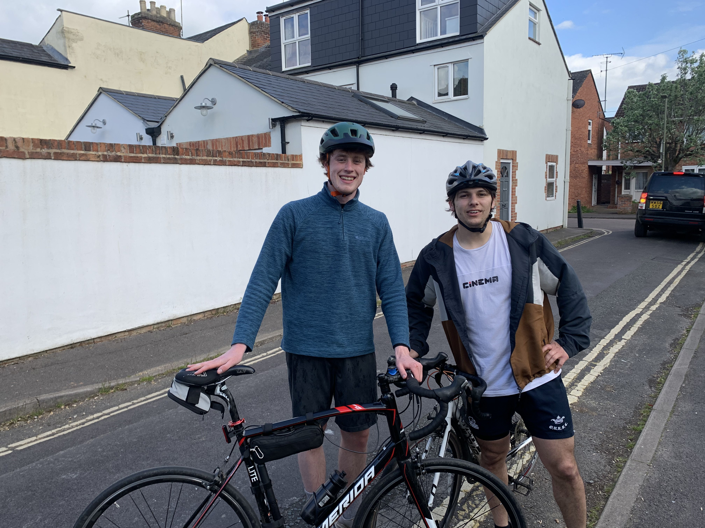

28/08/24 - My Fundraising Page
I'm really excited to be taking part in the 2024 Envision Charity cycle this September and my training is going well! You can find all information about the cycle on my JustGiving page by clicking here
I'll post a little more about my training here, but the main purpose of this is to post updates and pictures during the cycle.
Here's a picture from one of my training cycle's earlier in the year with my friend Julian!
